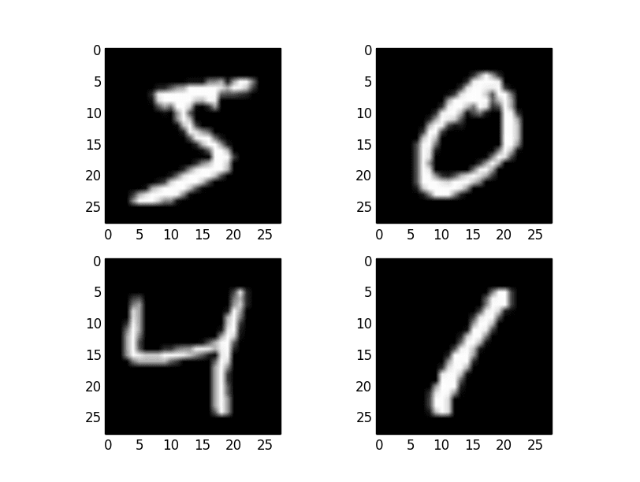

|
Click on this button to check out the project repo! |
|  |
Digit Recognizer using K-MeansProblem DescriptionUsed KMeans algorithm to perform imagery analysis or image classification. Also obtained the MNSIT database from Sci-kit Learn Note: Link is given at the bottom of the page |
More about the projectWe call the process k-means clustering because we assume that there are k-clusters, and each cluster is defined by its center point — its mean. To find these clusters, we use Lloyd’s Algorithm: we start out with k-random centroids. A centroid is simply a datapoint around which we form a cluster. For each centroid, we find the datapoints that are closer to that centroid than to any other centroid. We call that set of datapoints its cluster. Then we take the mean of the cluster, and let that be the new centroid. We repeat this process (using the new centroids to form clusters, etc.) until the algorithm stops moving the centroids. We do this in order to minimize the total sum of distances from every centroid to the points in its cluster — that is our metric for how well the clusters split up the data. I have used k-means clustering on the MNIST dataset of handwritten digits, which consists of 60,000 handwritten digits (0-9) that have been scanned in and scaled to 28×28 pixels. Results
|
|
|
Click on this button to check out the project repo! |